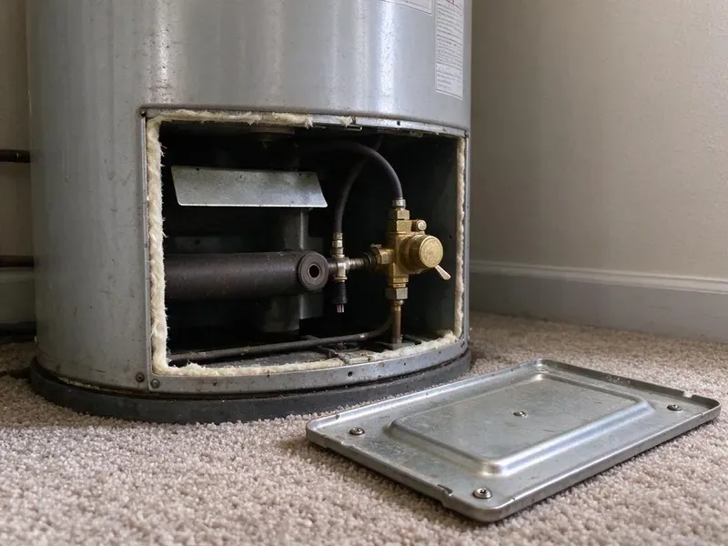

Pipe Repair in Watford City, ND
A burst pipe can dump gallons a minute. HPN Plumbing helps you stop the water and gets someone there fast in Watford City, ND.
- Minimal Drywall Openings
- Workmanship Warranty Included
- Pressure PRV Checks
- Written Price Before Work

Get the Pipe Repaired Today in Watford City, ND
We help you shut off the water on the phone, then send a plumber to make a permanent repair.
Pipe Repair in Watford City, ND for Leaks, Bursts and Corrosion
HPN Plumbing repairs pipe in Watford City, ND homes built decades ago and in brand-new construction. Each pipe type has weak spots. Galvanized rusts at threads, copper pins from the inside, CPVC turns brittle and PEX can let go at crimp rings, so we bring fittings for all of them and match the repair to what is already in your walls. Transitions get proper fittings.
Some of what we do:
- Galvanized to PEX or copper transition repairs with dielectric unions
- PEX and CPVC fitting repair
- Pinhole leak, cracked fitting and failed joint repair on supply lines

Additional Plumbing Repair Services in Watford City, ND
We offer expert plumbing repair services across Watford City, ND to fix leaks, restore flow, and keep your system running smoothly.


Customers
Why Choose HPN Plumbing for Pipe Repair in Watford City, ND?
Our quotes list the parts, the labor and the price. The number holds. If we open a wall and find a second problem, like a corroded fitting next to the leak we came for, you see it and approve it before we touch it. The original price stands otherwise.
- Every Material, Copper, PEX, CPVC, galvanized, ABS and cast iron, all repaired with matching fittings.
- Stocked Trucks, Common pipe and fittings are on hand for most jobs.
- Clean Work, Drop cloths, shoe covers and a tidy work area at the end.
Citywide Coverage
We repair pipes in every part of Watford City, from older homes with galvanized and copper to new builds with PEX. We stock parts for each. That means most jobs can be finished on the first visit, instead of a delay while someone hunts down parts.
Experienced Team
Every plumber on our team is licensed and trained on soldering, press, crimp and expansion fittings. That range matters. It lets them choose the right repair for your pipe, instead of forcing one method onto a material it does not suit.
Safety-First Approach
We shut off and drain the affected lines before any repair. Drop cloths go down. When soldering near wood framing, we use heat shields and keep a fire extinguisher on hand, and we check the area again before we leave to make sure nothing is smoldering.
Trusted Certified Watford City Plumbing Services Professionals
At HPN Plumbing, we take pride in licensed, certified plumbing services throughout Watford City, ND. Credentials matter in this trade. Every repair, install and maintenance visit follows strict safety and quality rules, and the plumbers doing the work carry recognized industry credentials.
Call Us Now PHCC Plumbing Contractor Recognition
PHCC Plumbing Contractor Recognition Better Business Bureau (BBB) Accreditation
Better Business Bureau (BBB) Accreditation Angi Certified Pro
Angi Certified Pro ISO 9001 Quality Management Certification
ISO 9001 Quality Management CertificationPipe Repair Jobs We Handle in Watford City, ND
Restaurant and Office Pipe Repair in Watford City
Retail spaces, offices, restaurants and apartment buildings need working plumbing to stay open. Shutdowns hurt. We repair supply and drain piping in commercial buildings, including larger diameter copper and cast iron lines, working early or late when the building needs to stay open. We can add shutoffs for next time.

Leaky Pipe Repair in Watford City, ND
Small leaks raise water bills and grow mold in hidden spaces. Check the meter. If the dial moves with every fixture off, there is a leak somewhere, so we shut off branches one at a time to find which part of the system is losing water. Then we open one spot.
Ceiling and Wall Leak Repair in Watford City, ND
When water is pouring through a ceiling or spraying under a sink, you need help right away. Locate your shutoff. We walk you through shutting off the water over the phone and send a plumber, who stops the leak, makes the repair and restores water as soon as the line passes a pressure test. You will know what needs drying.
PEX and Copper Pipe Repair in Watford City, ND
PEX and copper fail in different ways. Copper gets pinholes. Copper thins from the inside and develops pinholes, while PEX usually fails at fittings or where it was kinked during installation, so the truck carries tools and fittings for both. We test before closing up.
Emergency Pipe Repair in Watford City, ND
Water coming through a ceiling is not a next-week problem. Our phones stay on. We talk you through closing the main valve, then send a plumber to find the break, cut it out and make a permanent repair on the first visit in most cases, since the trucks carry common pipe and fittings. We flag wet drywall right away.
Drain and Waste Pipe Repair in Watford City
Drain pipe made of ABS, PVC or cast iron can crack, separate or leak at joints. Look for ceiling spots. A leaking drain often shows up as a stain below a bathroom or a musty smell in a cabinet, so we find it, swap the bad length and run water at full volume to prove it. Vents get checked too.
Commercial Pipe Repair in Watford City, ND
Offices, restaurants and apartment buildings lose money when the water is off. Timing matters. We repair larger diameter copper, CPVC and steel supply lines for Watford City businesses, planning water-off windows around business hours to keep things running. Only the affected branch goes down.

Buried Line Repair in Watford City
Buried pipes can be damaged by settling, roots or deep frost. Homeowners around Watford City should insulate exposed pipes, shut off outdoor spigots and keep the heat on when away in winter. Water mains are common. We locate the leak without guessing, and either fix it at the mark or pull a new line through the old route. Sewer lines get a camera.
Leak Repair Near Me in Watford City, ND
Most pipe repairs in Watford City are scheduled within a day. Leaks move up the list. Phone (701) 403-1348 with where the water is showing up, and the dispatcher will walk you through shutting it off until the plumber arrives.
You want a plumber who shows up on time and fixes the leak without a week of back and forth. We built our service around that. One plumber finds it, the same plumber repairs it, and you get a price on paper before any work begins.
HPN Plumbing at a Glance
- Licensed and insured plumbers serving Watford City, ND
- 24/7 emergency service with same-day scheduling
- Clear written estimates, no hidden fees
- 4.9-star rated by 408+ North Dakota customers
Watford City Map
Watford City Information
- Population
- 6,020
- Area codes
- Local
- Service area
- Watford City and towns within a 40 mile drive
- Nearby
- Williston, Dickinson, Minot, Minot AFB
Hard water, high pressure and long runs through hot attics or cold crawlspaces wear out household pipe early in Watford City, ND, so small leaks rarely stay small.
Expert Services
Call HPN Plumbing for reliable plumbing work done by licensed pros in Watford City, ND.
Our Specialized Plumbing Services in Watford City, ND
At HPN Plumbing, you get every kind of plumbing service from one company across Watford City, ND. We go from leak detection all the way to full system installations, for homes and commercial buildings, and we do it quickly at a fair price. Here are the core services we offer:


How a Pipe Repair Goes in Watford City, ND
Here is how a pipe repair runs from the first call to the last check of the gauge.
Call and Book
Phone (701) 403-1348 and tell us where the water is. We will help you shut it off.
Find & Price
A plumber locates the leak with moisture and thermal tools and gives you a written quote.
Repair
Once you approve, we cut out the damaged pipe and install the repair with matching fittings.
Frequently Asked Questions About Pipe Repair in Watford City
Minor leak repairs usually run $150 to $500. Hidden leaks run higher. Burst pipes inside finished walls or slab leaks can reach $1,000 to $4,000, depending on the pipe material, where the damage is and how much access the plumber needs to reach it. We price it after we find it.
All the common ones. Modern and legacy pipe. Copper, PEX, PVC, CPVC and galvanized steel make up most of what we see in Watford City, ND, so the trucks are set up for every one. Mixed systems are common.
Corrosion from the inside of the pipe. Water chemistry drives it. High velocity, excess pressure and stray electrical current from poor grounding can all thin the copper wall until a tiny hole opens, usually on a horizontal run. Water softeners and filters are popular around Watford City because they protect water heaters, dishwashers and faucets. More pinholes tend to follow.
Yes. Over 80 psi causes trouble. High pressure stresses pipes, fittings, water heaters and fixture supply lines, and it is a common cause of leaks, so we test your static pressure and can install or replace a pressure reducing valve when it reads high. It is a quick check.
Yes. We put the labor warranty on paper. Parts carry their own manufacturer coverage, which means both the parts and our labor are covered. You will see the terms before we start.
We do. Terms vary by job. A small fitting repair and a section replacement carry different terms because the parts and the risks are different, so you see the coverage for your specific repair in writing up front. Parts makers add their own coverage.
We can, in an emergency. Replacement is better. Polybutylene is prone to sudden failure as it ages, so we generally suggest replacing it with PEX or copper rather than patching it again and again. We price repair and replacement.
A clamp or tape can stop a drip for a day. Temporary fixes fail. Pressurized supply lines need a proper fitting, and a DIY patch that lets go while you are at work can flood a room in the time it takes to drive home. Use it only until a plumber arrives.
What Our Customers Say About Our Plumbing Experts

Laura S.
Our 40 gallon tank started leaking from the bottom after thirteen years. The tech hauled the old one out, set a new unit with a fresh expansion tank, and had hot water running in about four hours. He took the old tank with him too.
Water Heater Replacement · Minot, ND
Robert G.
The camera showed a full break in our clay sewer line near the street. HPN Plumbing replaced it with a trenchless pipe burst, so the only digging was two small pits in the yard. They let us watch the footage before and after.
Sewer Line Replacement · Dickinson, ND
Greg S.
I manage a small strip center with six tenants. HPN Plumbing handles our annual backflow testing and fixed a recurring clog in the shared sewer line that had been backing into the nail salon. Their reports come in clean and on time.
Commercial Plumbing · Watford City, ND
Emily R.
The shutoff valve under our kitchen sink snapped off in my hand on a Sunday morning. HPN Plumbing had someone out by early afternoon. He replaced both angle stops with quarter turn valves and showed me where our main shutoff was, which I honestly did not know.
Plumbing Repair · Mandan, NDMonica A.
Our water bill nearly doubled in one month with no change in how we used water. The tech checked the meter, heard the leak under the hallway with his equipment, and opened a hole about a foot square. Fixed the same day.
Slab Leak Repair · Dickinson, ND
Karen W.
After our third pinhole leak in copper, we stopped patching. HPN Plumbing gave us a written plan room by room and repiped the house in PEX while we stayed in it. The crew covered our floors every morning and cleaned up every night.
Repiping · Watford City, ND